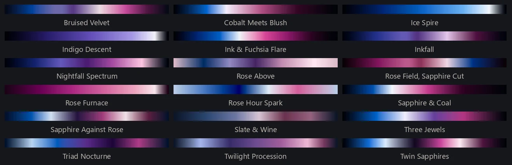

I had Claude write the 375 authored palettes in the library from a technical description of the problem. The palette prompt is short, and it's specific: it says what "dramatic" means in measurable terms, spreads each batch across a set of structural templates so the batch isn't twenty versions of one idea, and ends with a schema. Paste it into a Claude conversation, set the four lines at the top (batch size, mood family, complexity band, value key), and you get a JSON array of palettes, each stop in OKLCH. Run the validator on the result. It checks the mechanical rules: the loop closes, the number of stops fits the complexity band, the bright band is feathered rather than cut, a hard edge carries only a small step, a big hue jump routes through black or white. Once a batch validates, you can drop it into data/palettes/ and its palettes work like any others.
- The palette prompt: data/palettes/generator_prompt.md (v3.1)
- The validator: data/palettes/validate_palettes.py
- What each authored palette was made from: data/palettes/provenance.jsonl
Mood families in the prompt: fire-ice · jewel-earth · atmospheric-deep · antique-faded · high-key-luminous · pastel-iridescent · autumn-ember · oceanic · orchid-twilight · verdigris-copper · ember-in-ash · tonal-restrained · sapphire-rose. Both the mood-family and the value-key lines also accept span, which asks the batch to vary that axis instead of holding it; four of the seventeen shipped batches set the mood family that way.
